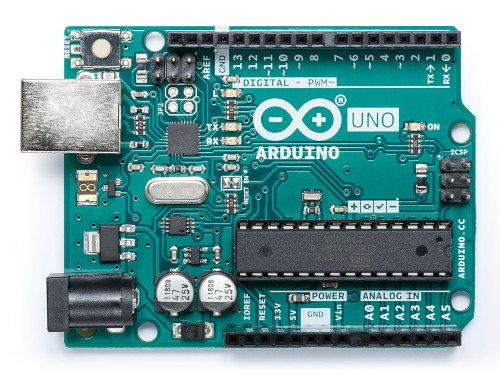
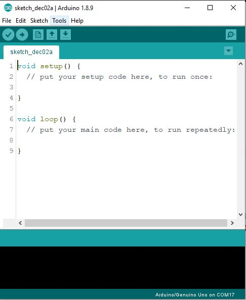

അർഡ്യൂനോ (Arduino)
അർഡ്യൂനോ എന്നത് ഒരു ഓപ്പൺ സോഴ്സ് ഹാർഡ്വെയർ പ്രോട്ടോടൈപിങ് പ്ലാറ്റഫോം ആണ്, ഇലക്ട്രോണിക്സ് ബോർഡും പ്രോഗ്രാം ചെയ്യാൻ ഉള്ള ഇന്റർഗ്രേറ്റഡ് ഡെവലൊപ്മെൻറ് എൻവിറോൺമെൻറ്(IDE ) ഉൾപ്പെട്ടതാണ് അർഡ്യൂനോ എന്ന പ്ലാറ്റഫോം .
ഇലക്ട്രോണിക്സ്, പ്രോഗ്രാമിങ് അറിയുന്ന തുടക്കകാർക് അർഡ്യൂനോ ഉപയോഗിച്ച് പെട്ടന് തന്നെ പ്രൊജക്റ്റ്/പ്രോഡക്റ്റ് അല്ലെങ്കിൽ ഒരു സങ്കല്പത്തെ വർക്കിംഗ് മോഡൽ ആയി മാറ്റുവാനും അതുപ്പോലെ ഇലക്ട്രോണിക്സ്, പ്രോഗ്രാമിങ് അറിയാത്തവർക് അത് പഠിക്കാനും അർഡ്യൂനോ വളരെ നല്ല ഒരു പ്ലാറ്റഫോം ആണ്. അതുകൊണ്ട് താനെ അർഡ്യൂനോ ഇപ്പോൾ സ്കൂൾ, കോളേജ് വിദ്യാർത്ഥികൾ, മേക്കേഴ്സ്, കലാകാരൻമാർ എന്നിവരുടെ ഇടയിൽ വളരെ പ്രചാരത്തിലാണ് .

അർഡ്യൂനോ ഉനോ (UNO)
എങ്ങനെ ആരംഭിക്കാം
അർഡ്യൂനോ ഇന്റർഗ്രേറ്റഡ് ഡെവലൊപ്മെൻറ് എൻവിറോൺമെൻറ് (IDE ) ഇൻസ്റ്റാൾഡ് ആയിട്ടുള ഒരു കമ്പ്യൂട്ടറും ഒരു അർഡ്യൂനോ ഇലക്ട്രോണിക് ഡെവലൊപ്മെൻറ്റ് ബോർഡും ഒരു USB കേബിളും മാത്രം മതി അർഡ്യൂനോ പ്രൊജക്റ്റ് ചെയ്തു ആരംഭിക്കാൻ . Cpp എന്ന കമ്പ്യൂട്ടർ പ്രോഗ്രംമിങ് ഭാഷയുടെ ഒരു ലളിതമായ രൂപമാണ് അർഡ്യൂനോ ഉപയോഗിക്കുന്നത് .

അർഡ്യൂനോ ഇന്റർഗ്രേറ്റഡ് ഡെവലൊപ്മെൻറ് എൻവിറോൺമെൻറ് (IDE )